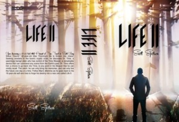

From the journal
Life II Time Travel E-Book on BookBub on Sale at $0.99 on Monday, Oct. 15 !!!
From the original website · 2018-10-12
A strange out-of-world scientist forces Max to re-live the moments before a car accident that in his past life killed a teenage girl who was a passenger. How does Max handle it the second time around? Now that he's stuck back to age 16, how does he deal with the messy stuff of his old life? Does he successfully warn the U.S. Gov't of 9/11 before it actually happens?
Go to BookBub website on Monday, October 15... and discover Max's new (but familiar) journey.
#bookbub #tt #scifi #timeless #bttf
Go to BookBub website on Monday, October 15... and discover Max's new (but familiar) journey.
#bookbub #tt #scifi #timeless #bttf
